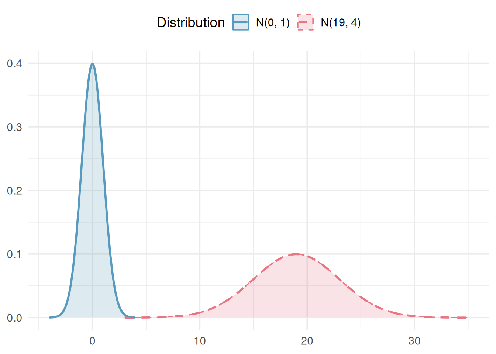
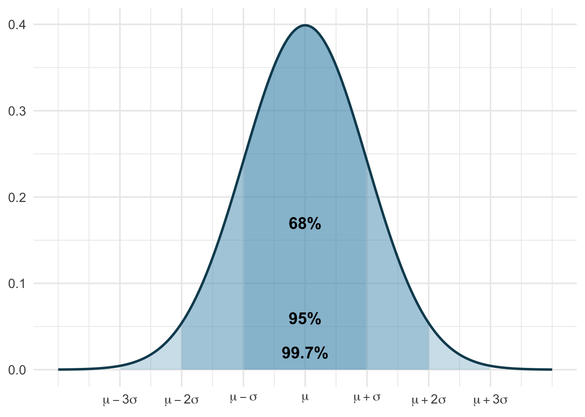

3.1 Normal Distributions
When we discussed randomization tests, we used simulation-based methods, randomization distributions and bootstrapping, to make inferences about population parameters. Those methods are powerful and flexible, but they share a limitation: every new problem requires running thousands of simulations. In this chapter, we introduce the normal distribution, a mathematical model that describes the bell-shaped pattern we keep seeing in our sampling distributions. When certain conditions are met, the normal distribution lets us calculate probabilities and construct confidence intervals using formulas instead of simulations. This is not a replacement for simulation-based thinking, it is a complement. The normal model provides the theoretical justification for why those simulations work the way they do.
Key Concepts
- Estimate probabilities as areas under a density curve
- Recognize how the mean and standard deviation represent to the center and spread of a normal distribution
- Use the 68-95-99.7 rule to compute probabilities of intervals for normal distributions
- Use technology to compute probabilities of intervals for normal distributions
- Use technology to find endpoint(s) of intervals with a specified probability for normal distributions
- Convert in either direction between a general normal distribution, denoted \(N(\mu, \sigma)\), and a standard normal distribution, denoted \(N(0, 1)\)
Density curves
A density curve is a graphical representation of the distribution for a continuous random variable (i.e. sample space with probabilities).
Although density curves come in many different shapes, there are two key characteristics that all density curves have:
- The total area under the curve equals 1 (which corresponds to 100% of the distribution).
- The area under the density curve within any interval is the proportion of the distribution in that interval and, thus, represents the probability that a randomly selected value from that distribution falls in that interval.
Normal distribution
The normal distribution is a symmetric, bell-shaped distribution described by two parameters: the mean, \(\mu\) (which determines the center), and the standard deviation, \(\sigma\) (which determines the spread). We write the distribution shorthand as \(N(\mu,\sigma)\).
It is not always easy to produce a bootstrap or randomization distribution to answer the statistical question of interest. However, in many circumstances, a theoretical model can be used in place of the randomization distribution. Most of the bootstrap and randomization distributions we have seen in this class have been symmetric and bell-shaped. This type of distribution shape occurs frequently in statistics and is also a characteristic of a family of continuous probability distributions called the normal distributions. The normal distribution is density curve that has been well-studied and has a number of very nice properties.
All normal distributions are centered at their mean, \(\mu\), and the standard deviation, \(\sigma\), tells us how spread out the distribution is. We will use the notation \(X \sim N(\mu, \sigma)\) to indicate that the random variable \(X\) follows a normal distribution with mean, \(\mu\), and standard deviation, \(\sigma\).
The standard normal distribution is denoted \(N(0,1)\).
The normal distribution with mean \(\mu = 0\) and standard deviation \(\sigma = 1\) is called the standard normal distribution, written \(N(0,1)\). We use the letter \(Z\) to represent the standard normal distribution.
Z-scores and standardizing
The standard score or z-score indicates how many standard deviations a particular value is from the mean.
Often times, we want to compare two different observations relative to their populations. To do so, it is helpful to first standardize them and then compare the standard score or z-score. The \(z\)-score is a measure of relative standing and tells us how many standard deviations the observation is from the mean. We can standardize a random variable \(X\) by using the following formula: \[Z = \frac{X - \mu}{\sigma}.\]
We can unstandardize \(Z\) by using the following formula: \[X = \mu + Z \sigma.\]
A positive z-score indicates the observation is above the mean and a negative z-score indicates below the mean. Z-scores closer to 0 are more common and z-scores further away from 0 are more rare.
Class Example 3.1.1: Standardizing to compare
For each of the following, compare the results using their standardized score
- Benny and Aaron are on the same track team. They have recently competed at a track and field day, and have each won their respective events. Benny won the high jump with a jump of 75 inches, and Aaron won the 100m dash with a time of 12 seconds. Let \(J \sim N(65, 2)\) be the height of the jumps and \(D\sim N(15, 1)\) be the times of the 100m dash. Who performed better Benny or Aaron?
- A car manufacturer has a small car that gets 36 mpg and a truck that gets 22 mpg. Let \(C \sim N(35, 4)\) be the distribution of mpgs for small cars and \(T \sim N(19, 3)\) be the mpgs for trucks. Which vehicle performs better relative to the other vehicles in its class?
The 68-95-99.7 rule (Emperical rule)
One of the most useful facts about th enormal distribution is how observations spread out around the mean. This relationship is captured by the 68-95-99.7 rule (sometimes called the emperical rule). The 68-95-99.7 rule gives for any normal distribution \(N(\mu, \sigma)\):
- About 68% of observations fall within 1 standard deviation of the mean: between \(\mu - \sigma\) and \(\mu + \sigma\).
- About 95% of observations fall within 2 standard deviations of the mean: between \(\mu - 2\sigma\) and \(\mu + 2\sigma\).
- About 99.7% of observations fall within 3 standard deviations of the mean: between \(\mu - 3\sigma\) and \(\mu + 3\sigma\).

Class Example 3.1.2: SAT scores
Let \(X\) be the SAT math scores for science and engineering majors, \(X \sim N(609, 80)\). Using the 68-95-99.7 rule, answer the following questions.
- What proportion of SAT scores should be between 529 and 689.
- What is the probability that a randomly selected student with a science and engineering major has an SAT score of at least 769?
- What proportion of SAT scores should be between 609 and 769?
Finding probabilities from the normal distribution
To find the probability that a normally distributed variable falls in a specified range, we must find the area under the density curve. You’ve already been doing this intuitively — in the randomization tests and bootstrap confidence intervals chapters, every time you counted “what fraction of simulated statistics were this extreme?” you were estimating a probability by looking at proportions in a distribution. The normal model just gives us a formula for the curve, so we can compute the area exactly instead of simulating it.
Strategy for normal probability problems. Always follow these steps:
- Draw a picture. Sketch the normal curve, mark the mean, and shade the area you want to find.
- Find the Z-score. Standardize the value(s) of interest using \(Z = \frac{x - \mu}{\sigma}\).
- Look up the area. Use a normal probability table, statistical software, or the StatLens Normal Distribution Explorer to find the area to the left of the Z-score.
- Adjust if needed. If you need a right-tail area, subtract the left-tail area from 1. For an area between two values, subtract the smaller left-tail area from the larger.
Class Example 3.1.3: Rainfall in Ithaca
Let \(R\) be the yearly rainfall (in inches) in Ithaca, NY. Data from Cornell’s Northeast Regional Climate Center indicates that \(R \sim N(35.4, 4.2)\).
- How much rain should Ithaca expect to get in the year that is the \(99^{th}\) percentile of rainfall?
- How much rain should Ithaca expect to get in the year that marks the top 20 percent of rainfall?
- What should the IQR be for yearly rainfall in Ithaca? (i.e. the middle 50%)
Class Example 3.1.4: Furniture assembly
A company that markets build-it-yourself furniture sells a computer desk that is advertised with the claim “less than an hour to assemble.” Let \(T\) be the time (in hours) it takes to assemble the furniture. Through post-purchase surveys, it appears that \(T \sim N(1.29, 0.43)\).
- What percentage of people should be able to assemble the desk in less than an hour?
- What is the probability that a randomly selected person can assemble the desk in between 1 and 1.5 hours?
- The company would like to change the advertising claim to read “less than _______________ to assemble” so that 90% of people can assemble the desk in the time listed. What time should they use (as the cutoff for the bottom 90%)?
The normal approximation to sampling distributions
The standard error (SE) of a statistic is the standard deivation of its sampling distribution. It measures how much the statistic varies from sample to sample.
In the sampling distributions chapter, we used simulation to explore sampling distributions, the distributions of sample statistics computed from many repeated samples. A striking pattern emerged: regardless of whether we were looking at sample means, sample proportions, or differences in means or proportions, the sampling distributions tended to look normal centered at the parameter of interest due to the Central Limit Thorem. But how wide is the normal distribution? The spread of the sampling distibution is given by the standard error.
The standard error depends on the parameter of interest:
| Parameter | Point estimate | Standard error |
|---|---|---|
| Population mean \(\mu\) | \(\bar{x}\) | \(SE = \frac{s}{\sqrt{n}}\) |
| Population proportion \(p\) | \(\hat{p}\) | \(SE = \sqrt{\frac{\hat{p}(1-\hat{p})}{n}}\) |
| Difference in means \(\mu_1 - \mu_2\) | \(\bar{x}_1 - \bar{x}_2\) | \(SE = \sqrt{\frac{s_1^2}{n_1} + \frac{s_2^2}{n_2}}\) |
| Difference in proportions \(p_1 - p_2\) | \(\hat{p}_1 - \hat{p}_2\) | \(SE = \sqrt{\frac{\hat{p}_1(1-\hat{p}_1)}{n_1} + \frac{\hat{p}_2(1-\hat{p}_2)}{n_2}}\) |
Putting it all together, for the sample mean, \(\overline{x}\), and sample proportion \(\widehat{p}\):
- The sampling distribution of \(\bar{x}\) is approximately \(N\!\left(\mu, \frac{\sigma}{\sqrt{n}}\right)\).
- The sampling distribution of \(\hat{p}\) is approximately \(N\!\left(p, \sqrt{\frac{p(1-p)}{n}}\right)\).
Confidence intervals using the normal model
The normal approximation also lets us build confidence intervals without bootstrapping.
General confidence interval formula. When the sampling distribution of a statistic is approximately normal with standard error \(SE\), a confidence interval takes the form:
\[\text{point estimate} \pm z^* \times SE\]
where \(z^*\) is chosen based on the desired confidence level:
| Confidence level | \(z^*\) |
|---|---|
| 90% | 1.645 |
| 95% | 1.960 |
| 99% | 2.576 |
The distance \(z^* \times SE\) is called the margin of error. For a 95% confidence interval, \(z^* = 1.96\) (often rounded to 2), giving a margin of error of approximately \(2 \times SE\). This is directly connected to the 68-95-99.7 rule: 95% of sample statistics fall within about 2 standard errors of the true parameter value.
Class Example 3.1.5: Stents and stroke risk
A study examined whether stents reduce stroke risk. The observed difference in 30-day stroke rates (treatment minus control) was \(\hat{p}_T - \hat{p}_C = 0.090\), with \(SE = 0.028\). Construct a 95% confidence interval.
Summary
This chapter introduced the normal distribution, the most commonly encountered distribution in statistics. Key concepts include:
- The normal distribution is described by two parameters: the mean \(\mu\) (center) and standard deviation \(\sigma\) (spread), written as \(N(\mu, \sigma)\).
- The 68-95-99.7 rule provides quick estimates: about 68%, 95%, and 99.7% of observations fall within 1, 2, and 3 standard deviations of the mean.
- A Z-score standardizes an observation by measuring how many standard deviations it lies from the mean: \(Z = \frac{x - \mu}{\sigma}\).
- Normal probabilities are found by computing Z-scores and looking up areas under the standard normal curve using tables, software, or StatLens.
- The standard error measures how much a statistic varies from sample to sample and is the key ingredient in confidence intervals and hypothesis tests.